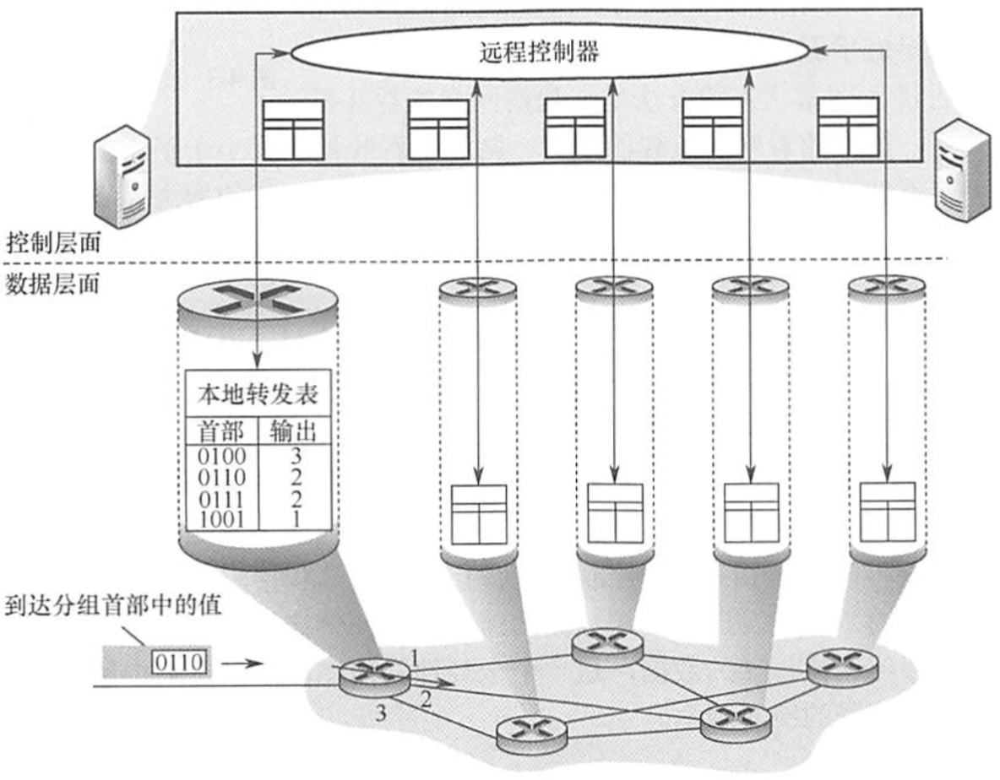

2022.08.14
网络层的功能
静态路由（手工配置）
动态路由
距离向量路由算法
链路状态路由算法
层次路由
自治系统
内部网关协议/域内路由选择（IGP）
外部网关协议/域间路由选择（EGP）
异构网络互联——物理层与链路层都不一样的异构网络
路由与转发
SDN（软件定义网络）

视频讲解(by 湖科大教书匠)：
- SDN这种新型网络体系结构的核心思想：把网络的控制层面利用软件来控制数据层面中的许多设备。
- OpenFlow协议可以被看成是SDN喜提结构中控制层面与数据层面之间的通信接口。
- 在SDN中取代传统路由器中转发表的是：“流表（Flow Table）”。在OpenFlow交换机中，既可以处理数据链路层的帧，，也可以处理网际层的IP数据报，还可以处理运输层的TCP或UDP报文。
拥塞控制
【例题】在路由器互联的多个局域网的结构中,要求每个局域网(C)
A.物理层协议可以不同,而数据链路层及其以上的高层协议必须相同
B.物理层、数据链路层协议可以不同,而数据链路层以上的高层协议必须相同
C.物理层、数据链路层、网络层协议可以不同,而网络层以上的高层协议必须相同
D.物理层、数据链路层、网络层及高层协议都可以不同